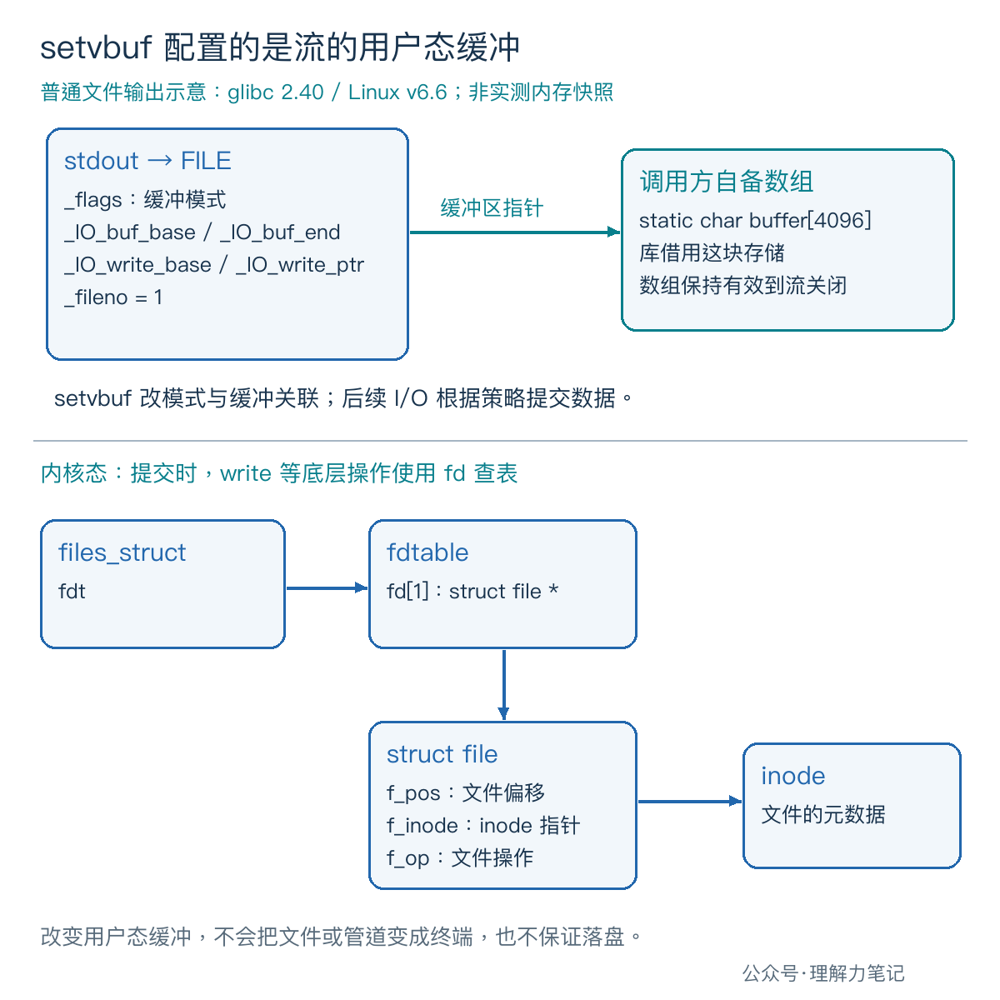

把输出重定向到文件以后，想让每一行日志及时出现，可以给 stdout 显式设置行缓冲。但如果把配置放在第一次 printf 后面，或者把辅助函数里的局部数组交给流，代码就埋下了另外的问题。
在流上做其他操作之前，用
setvbuf选择缓冲方式，并检查返回值。若提供自己的数组，它必须持续有效到流关闭。 只关心模式时可传NULL，把缓冲存储交给库安排；需要管理存储时，再提供数组及其真实大小。
这篇文章怎么读？
| 你是谁 | 看哪一章 | 会得到什么 |
|---|---|---|
| 搜索者 / 被推荐者 | 第一章 · 先解决问题 | 对比显式配置后的三种输出行为 |
| 学习者 | 第二章 · 机制解释 | 看懂流对象怎样关联缓冲区 |
| 编程者 | 第三章 · 工程使用 | 管好配置时机、数组寿命和关闭错误 |
| 求职者 | 第四章 · 面试提炼 | 解释为什么局部数组可能留下悬空指针 |
setvbuf(stream, buf, mode, size) 的四个参数依次指定流、可选的自备数组、模式和大小。模式使用 <stdio.h> 的宏：_IOFBF 全缓冲、_IOLBF 行缓冲、_IONBF 无缓冲。
下面的程序把三种模式写成 full、line、none。前两种提供 4096 字节的静态数组；无缓冲使用 NULL 和 0。输出后程序暂停，先观察字节是否已经到达目标，再允许它关闭流。
实际环境是 macOS 14.8.8 x86_64、Apple clang 16.0.0，未在 Linux 主机实测。 接口约束依据 POSIX.1-2024 中与 ISO C 对齐的定义；第二章的 Linux/glibc 细节另由版本化源码核对。
保存为 setvbuf_probe.c：
编译后，在第一个终端运行：
看到 [checkpoint] press Enter 后先别按回车，在同一目录的另一个终端执行 od -An -tx1 out.txt，检查是否已有字节。检查完再回车。把两个参数换成其他组合，分别用新进程运行；接管道时可用 ./setvbuf_probe line newline | cat 观察。
自动核验同样在检查点暂停，用文件读取和管道读取取出实际字节。三种模式乘两种文本，再分别接普通文件与管道，共 12 组。两个目标的暂停时结果一致：
| 显式配置 | 输出 ready\n，暂停时 |
输出 ready>，暂停时 |
|---|---|---|
full：全缓冲 |
无字节 | 无字节 |
line：行缓冲 |
ready\n |
无字节 |
none：无缓冲 |
ready\n |
ready> |
表中的 \n 表示换行字节。放行后，12 组都完整输出各自的文本，退出码均为 0。这里由显式 fclose(stdout) 提交剩余输出，不能把它当成“程序退出时自动刷新”的实验。
等待用的是 POSIX read，并处理 EINTR；它避免了额外的标准 I/O 输入操作可能触发的行缓冲刷新。实验只观察这几字节何时可见，不测吞吐量，也不推断每次系统调用写多少字节。
在 glibc 2.40 中，setvbuf 对应的 _IO_setvbuf 会调整 FILE 内部的模式标志。配置全缓冲会清除行缓冲、无缓冲标志；配置行缓冲会置上 _IO_LINE_BUF；配置无缓冲则置上 _IO_UNBUFFERED。
对普通文件流，提供数组后，设置路径会把数组边界记到 _IO_buf_base、_IO_buf_end 等字段，后续输出再维护写指针。库保留的是这块存储的地址，因此函数调用结束后，数组仍有用途。这些字段是 glibc 实现细节，应用代码不要直接修改它们。

图中 _fileno = 1 是用于查表的描述符编号。库需要提交数据时，才沿底层写入路径进入内核，通过描述符表找到 struct file。setvbuf 不会改变重定向目标的类型，也不会调整内核页缓存大小。
行缓冲会在遇到换行时提交输出；无缓冲尽快传递输出；全缓冲允许库积攒数据后成块提交。本次小量输出正好显出三种策略的差别，但“全缓冲必须等到装满才写”“无缓冲等于一次调用一个系统调用”都不是接口保证。
buf 非空时，size 描述所提供数组的大小，不能大于实际可用空间；POSIX 也明确提醒，库不一定把全部空间都用于缓冲。buf 为 NULL 时，库可以根据 size 安排存储，却不保证实际容量严格等于这个数字。
glibc 2.40 的 buf == NULL 分支就没有把传入的 size 当成精确容量要求；行缓冲分支还可能把分配留到后续操作。涉及“马上分配多少内存”的结论，应核对具体实现。
即使提供 4096 字节数组，输出也可能因换行、显式刷新或关闭而提前提交；glibc 对大块写入还可能直接提交部分数据。缓冲大小不能用来划分管道消息，也不能据此承诺写入原子性或数据已经落盘。
规范要求在流关联到打开的文件之后、对它做其他操作之前调用 setvbuf，例外是此前失败的 setvbuf 调用。对 fopen 得到的流，紧接着配置；对 stdout，在第一次使用它之前配置，也要留意初始化代码是否已经打印过内容。
先 printf、再 fflush、最后改缓冲，不会重新满足这个时机要求。即便某个库允许，也不能作为可移植写法。多线程程序应在其他线程拿到流之前完成初始化，不能靠流内部的锁把晚配置变成合规操作。
批量写文件可以保留默认全缓冲；逐行日志可以选行缓冲；少量、没有换行也要及时提交的输出可以考虑无缓冲。若只需要几个特定时刻提交，检查 fflush 的返回值通常更合适。无缓冲可能增加底层写入次数，并不天然更快。
一个辅助函数在局部声明 char buf[4096]，把它交给 setvbuf 后返回，而流继续使用，这是典型错误：数组生命周期已经结束，流保存的地址失效。即使暂时还能输出，也不能依赖它。
主实验用 static 数组，存储持续到程序结束，并且主动关闭 stdout。普通局部数组也能用，前提是在离开作用域之前关闭流，连错误分支也必须做到。
如果用 malloc 分配，检查分配结果，并由同一个资源管理者持有流和数组：先 fclose、检查关闭结果，再 free。配置失败时也走清理路径。库借用数组期间，不要手动改它、读它来猜待输出内容，或把同一数组同时交给另一个流。
glibc 用 _IO_USER_BUF 区分自备存储，关闭时不会替调用方释放这块数组。只想改变模式而不想管理这份资源时，传 NULL 更省事。
setvbuf 成功返回 0，失败返回非零，不应只判断是否等于 EOF。POSIX 允许失败时设置 errno，但不保证必定设置，因此主实验打印明确的配置失败提示，不直接依赖 perror。独立探针也已验证，本机库会拒绝非法模式。
输出仍要检查写入和关闭结果。把子进程的 RLIMIT_FSIZE 设为 0，并仅在该子进程中忽略 SIGXFSZ 后，摘取错误行并按模式标注：
两次退出码都是 1。全缓冲下，前面的写入被库接受了，真正提交时才失败。输入提前结束、非法参数等失败路径也已核验，主实验的清理分支会关闭已配置的流；关闭可能提交此前缓冲的数据，并不等于撤销输出。
fclose 返回后，流就不能再用，即使返回失败也不要再次关闭。本例在进程结束前关闭 stdout；项目若有退出处理函数还要向它输出，须等最后一次使用后再关闭。示例只演示单线程、阻塞输出，不提供非阻塞流部分提交后的恢复协议。
可以这样回答：setvbuf 可能让流持续使用调用方的数组，局部自动数组随着作用域结束而失效，静态数组则持续存在。正确性取决于数组是否覆盖流的使用期；局部数组只要在作用域内先关闭流，也可以安全使用。
若被追问“传 NULL、大小写 4096，是否一定得到 4096 字节缓冲”，答案是不保证，要区分标准允许的行为和具体库实现。
本文为公众号「理解力笔记」原创。转载请联系作者，并保留出处。